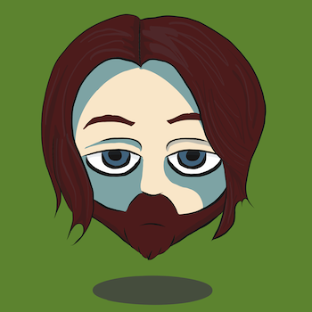
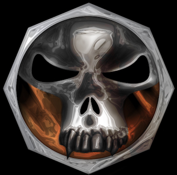
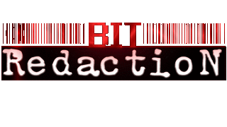
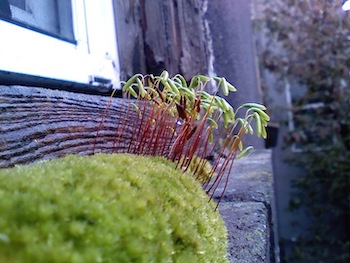
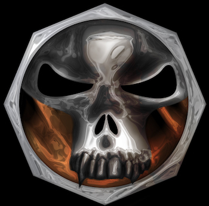
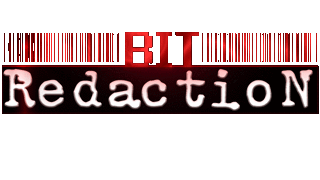
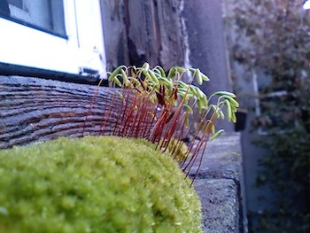

An avatar, made in Adobe Illustrator for iPad.

Logo made for a band. Created in Adobe Photoshop for Windows.

Project made for art show at Mesa Community College. Created in Photoshop for Windows.

Logo made for a Twitch.tv channel. Created in Photoshop and After Effects for Windows.

Photo taken outside of my Portland, Oregon apartment.